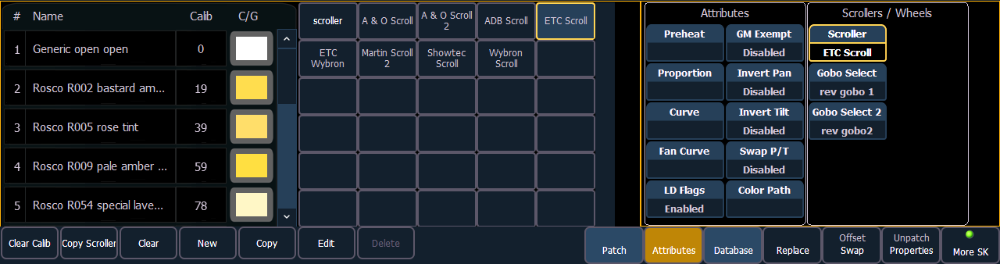

Default color and pattern media for the selected fixture, as determined in the fixture library, is displayed in the {Attributes} page. Only the media attributes that are available for the selected fixture will display.
In the image below, the selected channel is a Source Four Revolution® with a color scroller and two gobo wheels. If the selected channel included other wheels, each device would be represented in the display with a button.

The picker displays on the left half of the CIA when you select the specific attribute ({Scroller}, {Color Wheel}, {Gobo Wheel}, or {Effect Wheels}). The picker displayed is specific to the selected attribute (the scroll picker will display when {Scroller} is pressed, the color wheel picker will display when {Color Wheel} is pressed, and so on).
The picker displays buttons for the standard scroll or wheel type of the selected channel. The default selection is the wheel as shipped from the manufacturer (derived from the fixture library). Displayed to the left of the standard scroll/wheel selection is a list of each color/gobo as they are installed in the selected device (frame by frame). When the color or pattern image is available, it will display next to the frame name.
In the above image, {ETC Scroll} is the default scroll for the selected ETC Source Four Revolution. The list of gel colors as they are installed in the scroll are displayed to the left with a color chip for easy reference. Selecting any other type, such as {Martin Scroll 2}, updates the frame list.
The softkeys displayed beneath the picker are {Clear Calib}, {Copy Scroller}, {Clear}, {New}, {Copy}, {Edit}, and {Delete}.